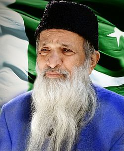

Abdul Sattar Edhi
Pakistan's Angel of Mercy
humanitarian, philanthropist and ascetic
28 February 1928 -8 July 2016

A short time line of Abdul Sattar Edhi's life
- Founded Edhi Foundation, which runs the worlds's largest ambulance network, along with homeless shelters, animal shelters, rehabilitation centers, and orphanages across Pakistan.
- On his faith, he stated that he was a "humanitarian", telling others that "empty words and long phrases do not impress God" and to "show Him your faith" through action.His mother had brought him up teaching love and care for humans
- His appearance in traditional Pakistani clothing and a long beard made him appear visibly Muslim, that even sometimes made him suffer during traveling outside the country.
- In the early 1980s, Edhi was arrested by Israeli troops while he was entering Lebanon.
- Edhi dedicated his life to aiding the poor. Over the course of sixty years, he single-handedly changed the face of welfare in Pakistan.
- Edhi was known for his ascetic lifestyle, owning only two pairs of clothes, never taking salary from his organization, and living in one room with kitchenette at the Foundation's headquarters in the heart of Karachi.
- It runs the world's largest volunteer ambulance service (operating over 1,500 of them) and offers 24-hour emergency services. It also operates free nursing homes, orphanages, clinics, women's shelters, and rehabilitation centres for drug addicts and the mentally ill.
- In 1965, Edhi married Bilquis Bado, a nurse who worked at an Edhi Trust dispensary.[38] They had four children, two daughters, and two sons.
- Bilquis became responsible for running the free maternity home at the foundation's headquarters in Mithandar, Karachi, where she raised her children on the top floor, and on the lower floors, ran the local delivery room, and organised the adoption of abandoned babies. These were babies who were dropped into a cradle placed outside every Edhi centre across the country or found dumped in trash piles in the streets. Often such babies were otherwise at risk of being killed because of being born out of wedlock or due to rape.
- Edhi became the only social worker and the fifth Pakistani personality to have been honoured with a commemorative coin.
- He achieved so many National and International awards and earn the milions of hearts of people in his life.
- He became the third person in Pakistan's history to receive a state gun carriage funeral after Muhammad Ali Jinnah and Zia-ul-Haq. He was the only Pakistani without a state authority or a state role to receive a state funeral.
- state honors were given to Edhi by a guard of honor and a 19-gun salute. Following the funeral he was laid to rest at Edhi Village on the outskirts of Karachi.
"My relegion is humanitarianism, which is the basis of every relegion in the world." ,
"serving humanity is the biggest Jihad"
If you have time, you should read more about this incredible human being by just clicking here